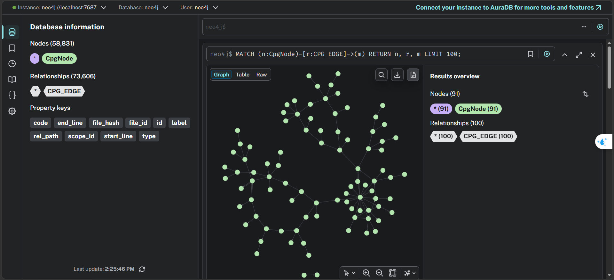
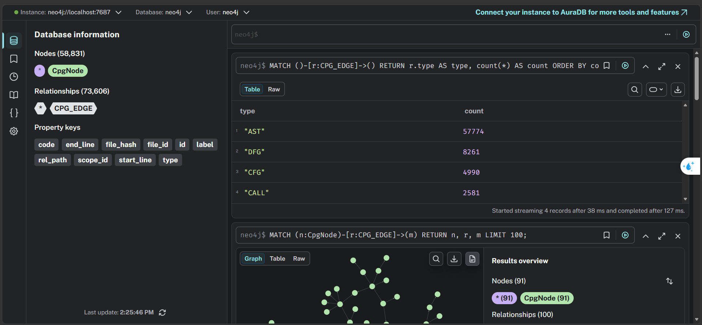
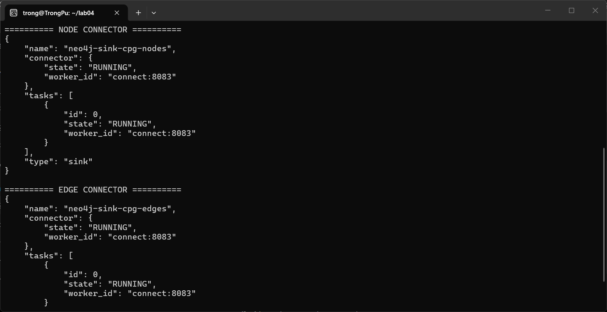

Task 4 — Graph Topology Ingestion into Neo4j#
Approach and reasoning#
The lab requires the graph topology to reach Neo4j directly from Kafka, with no intermediate Spark layer. We therefore use the Neo4j Connector for Kafka in sink mode, with the Cypher strategy: each topic is bound to a Cypher statement that the connector executes per batch of messages.
How idempotency is achieved#
Every statement uses MERGE keyed on our stable id, never CREATE:
// cpg.nodes
MERGE (n:CpgNode {id: __value.node.id})
SET n.type = __value.node.type,
n.file_id = __value.file_id,
n.rel_path = __value.rel_path,
n.file_hash = __value.file_hash
// cpg.edges — note both endpoints are MERGEd
MERGE (s:CpgNode {id: __value.edge.src_id})
MERGE (d:CpgNode {id: __value.edge.dst_id})
MERGE (s)-[r:CPG_EDGE {id: __value.edge.id}]->(d)
SET r.type = __value.edge.type, r.file_hash = __value.file_hash
Why both endpoints are MERGEd. Node and edge events travel on separate
topics with independent partitions, so an edge can arrive before its endpoints.
MATCH would silently drop those edges; MERGE creates a placeholder that the
node event later enriches. This removed an ordering dependency between two
topics that we could not otherwise guarantee.
A uniqueness constraint on CpgNode.id makes each MERGE an index lookup rather
than a scan, and makes duplicate nodes impossible at the database level.
Step 1 — create the constraint (run once, before the connectors)#
cypher-shell prints nothing on success here — an empty output below means
the constraint statement was accepted (it uses IF NOT EXISTS, so re-running
is a no-op).
import os
os.chdir("..")
!docker exec -i neo4j cypher-shell -u neo4j -p password < src/neo4j/constraints.cypher
Step 2 — confirm the Neo4j connector plugin is installed#
!curl -s http://localhost:8083/connector-plugins | python -m json.tool | grep -i neo4j
"class": "org.neo4j.connectors.kafka.sink.Neo4jConnector",
"class": "org.neo4j.connectors.kafka.source.Neo4jConnector",
Step 3 — register both sink connectors (idempotent)#
Registration must be safe to run any number of times. A plain POST returns
HTTP 409 (“connector already exists”) on the second run — that is not a
pipeline error, just Connect refusing to create a duplicate. Instead of leaving
a 409 in the output, this cell checks first: a missing connector is created
with POST, an existing one gets its config re-applied with
PUT /connectors/<name>/config, which is a no-op when nothing changed.
import json, urllib.request, urllib.error
BASE = "http://localhost:8083/connectors"
def register(path):
payload = json.load(open(path))
name, config = payload["name"], payload["config"]
try:
urllib.request.urlopen(f"{BASE}/{name}")
req = urllib.request.Request(
f"{BASE}/{name}/config", data=json.dumps(config).encode(),
headers={"Content-Type": "application/json"}, method="PUT")
urllib.request.urlopen(req)
print(f"{name}: already registered -> config re-applied (idempotent)")
except urllib.error.HTTPError as e:
if e.code != 404:
raise
req = urllib.request.Request(
BASE, data=json.dumps(payload).encode(),
headers={"Content-Type": "application/json"})
urllib.request.urlopen(req)
print(f"{name}: created")
register("src/neo4j/neo4j-sink-nodes.json")
register("src/neo4j/neo4j-sink-edges.json")
neo4j-sink-cpg-nodes: already registered -> config re-applied (idempotent)
neo4j-sink-cpg-edges: already registered -> config re-applied (idempotent)
Step 4 — verify both connectors and their tasks are RUNNING#
!curl -s http://localhost:8083/connectors/neo4j-sink-cpg-nodes/status | python -m json.tool
!curl -s http://localhost:8083/connectors/neo4j-sink-cpg-edges/status | python -m json.tool
{
"name": "neo4j-sink-cpg-nodes",
"connector": {
"state": "RUNNING",
"worker_id": "connect:8083"
},
"tasks": [
{
"id": 0,
"state": "RUNNING",
"worker_id": "connect:8083"
}
],
"type": "sink"
}
{
"name": "neo4j-sink-cpg-edges",
"connector": {
"state": "RUNNING",
"worker_id": "connect:8083"
},
"tasks": [
{
"id": 0,
"state": "RUNNING",
"worker_id": "connect:8083"
}
],
"type": "sink"
}
A connector can report
RUNNINGwhile an individual task has failed. Check thetasksarray in the output above, not just the top-level state.
Step 5 — run the parser against the live broker#
!python src/parser/parser_service.py --manifest reports/file_manifest.json \
--repo ./optimum --bootstrap localhost:9092
processed 10/59 files
processed 20/59 files
processed 30/59 files
processed 40/59 files
processed 50/59 files
processed 59/59 files
Event counts: {'node': 58817, 'edge': 73587, 'metadata': 59, 'error': 0}
Step 6 — verify the graph in Neo4j#
!docker exec neo4j cypher-shell -u neo4j -p password \
"MATCH (n:CpgNode) RETURN count(n) AS nodes"
!docker exec neo4j cypher-shell -u neo4j -p password \
"MATCH ()-[r:CPG_EDGE]->() RETURN r.type AS type, count(*) AS n ORDER BY n DESC"
nodes
58817
type, n
"AST", 57760
"DFG", 8259
"CFG", 4987
"CALL", 2581
Step 7 — the duplicate checks that must return zero rows#
Idempotency evidence at the graph level: no two nodes share an id, and no two
relationships share an id. Both queries must return nothing.
With zero duplicate rows cypher-shell prints neither rows nor headers, so a
completely empty output below is the pass condition. The machine-checked
equivalent (duplicate_nodes == 0 && duplicate_edges == 0) is recorded in
reports/evidence/task6_verification.json.
!docker exec neo4j cypher-shell -u neo4j -p password \
"MATCH (n:CpgNode) WITH n.id AS id, count(*) AS c WHERE c > 1 RETURN id, c"
!docker exec neo4j cypher-shell -u neo4j -p password \
"MATCH ()-[r:CPG_EDGE]->() WITH r.id AS id, count(*) AS c WHERE c > 1 RETURN id, c"
Database UI evidence#
Open the Neo4j Browser at http://localhost:7474 and run:
MATCH (n:CpgNode)-[r:CPG_EDGE]->(m) RETURN n, r, m LIMIT 100
Screenshots captured on this machine:



Reflection#
What failed on this machine. The nodes sink task went to FAILED seconds
after registration. scripts/diagnose_connector.sh showed the real trace:
InvalidReplicationFactorException while creating the dead-letter-queue topic
cpg.nodes.dlq — Kafka Connect defaults DLQ replication factor to 3, and this
stack runs a single broker. The task died during initialisation, before ever
reaching Neo4j, so the exception surfacing under a Neo4j connector was purely
a Kafka topic-config problem. The fix
("errors.deadletterqueue.topic.replication.factor": "1") was already in the
sink JSON, but the connector had been registered earlier with the old config
and Connect does not re-read a changed file — scripts/reload_connectors.sh
(delete + re-register) brought both connectors to RUNNING/RUNNING.
What worked. Creating the uniqueness constraint before the connectors:
without it MERGE degrades to a full label scan and ingesting ~59k nodes goes
from minutes to hours. With it, 58,817 nodes and 73,587 edges landed with the
duplicate check returning zero rows, and MERGE on both edge endpoints kept
the sink order-independent across the two topics.